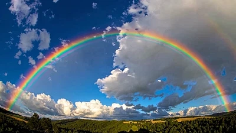

Olá, meu nome é Núbia e eu vou criar um site incrível utilizando apenas HTML e CSS
O arco-íris é uma das maiores poesias visuais da natureza, um espetáculo de luz que transforma um dia cinzento em uma verdadeira galeria de arte a céu aberto.
Longe de ser um objeto estático ou palpável, ele é uma magnífica ilusão de ótica que ganha vida através de uma coreografia perfeita entre o Sol e as tempestades.
Quando a luz solar atravessa as gotículas de chuva suspensas no ar, ela sofre refração, reflete-se no interior dessas pequenas lentes naturais e se dispersa.
Esse processo revela que a luz branca que nos guia esconde, na verdade, um segredo vibrante. Embora nossos olhos humanos tenham convencionado enxergar sete cores majestosas organizadas em um degradê perfeito — do imponente vermelho ao místico violeta —, esse portal celeste abriga um espectro infinito de tons contínuos e sem barreiras.
Essa ponte colorida carrega em seu nome uma herança mitológica profunda, batizada em homenagem a Íris, a deusa grega mensageira que cruzava os céus para unir a Terra ao divino.
Ela deixava um rastro de cores como prova de que a esperança e a comunicação nunca se perdem.
O mais inspirador de tudo é compreender a exclusividade desse fenômeno: o arco-íris que você contempla é desenhado exclusivamente para os seus olhos.
Como ele depende do ângulo exato da sua perspectiva no universo, duas pessoas jamais verão exatamente o mesmo arco.
Além disso, se olharmos de um avião, descobrimos que ele não é um arco incompleto, mas sim um círculo perfeito e infinito, que às vezes se duplica em espelho no horizonte ou se veste de prata sob o luar nos raros moonbows.
Compreender o arco-íris é lembrar que, mesmo após as maiores tempestades, o universo encontra uma forma extraordinária de reorganizar a luz e nos mostrar a beleza oculta na simplicidade de uma gota de água.